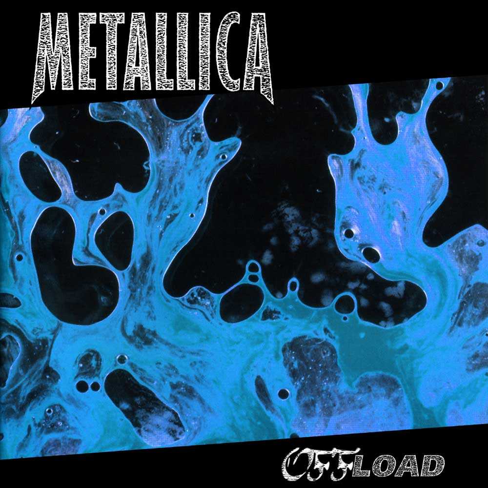

$ BaronBurdock
2023 05 10: Metallica Offload
Within Metallica’s discography, Load and Reload are still divisive, 26 years later. Released after the band’s 16x platinum self-titled album (the Black Album), these two albums saw the band move even further away from their thrash metal roots. The Black Album was certainly slower and more melodic than the bands albums in the the 80’s, but it was still, at it’s core, a Metallica album. With Load and Reload, things were different. Metallica cut their hair. Metallica embraced abstract art by putting semen, piss and blood on their album covers. Worst of all, Metallica moved into blues rock. This was a bridge too far.
Originally the two albums were intended to be released as a double album but due to setbacks while recording, they were released individually as companion albums one year apart. Even though the two albums sold well, reviews were initially mixed, and retrospective reviews have been much harsher - “Uninteresting”, “Repetitive” and “Bloated.”
Addition through Subtraction
The 90’s were a wild time for music. From 1960s to the early 1990s, albums tended to be about 45 minutes in length due to the constraints of vinyl. As I mentioned in my Beatle’s Yellow Album post, LP’s have an average run time of 22 minutes on each side. In some cases, sound engineers can push things to about 40 minutes per side by sacrificing sound quality. Once you pass the 22 minute mark on an LP however, the bass suffers which is a real problem for rock music. With vinyl now relegated to the dustbin of history, the compact disc granted artists the freedom to fill all 80 minutes of space. Many tried their hardest to do so. Load is Metallica's longest studio album with a runtime of 78:59. That runtime was reached after the band was forced to shorten Outlaw Torn by a minute. Reload, which somehow feels even longer, clocks in at tiresome 76:04. If the two albums were released as a vinyl “double album”, it would take four LP’s.
My stance on double albums is this: in almost every case, a double album can be improved by slimming down to a single album (obligatory future White Album relisting pending). Load/Reload are no exception to this rule. There is a lot of room to Offload some filler (cringeworthy pun intended). Here is my track list:
Offload
- Fuel
- The Memory Remains
- The House the Jack Built
- Until it Sleeps
- King Nothing
- Hero of the Day
- Bleeding Me
- Devil’s Dance
- The Unforgiven II
- Where the Wild Things Are
- The Outlaw Torn
Offload Album Rationale
Compared to the Beatle’s Yellow Album, I had a lot more freedom on this one. For starters, I didn’t have to worry about track chronology, balancing multiple singers, royalty issues, and the limitations of vinyl. Both Load and Reload have a similar feel to them, so I could move songs around where I please (although I was fairly conservative where I placed things). I didn’t feel bad about cutting many of the songs from these two albums, especially Reload, which is one of Metallica’s weakest albums in my book. Some thoughts and considerations:
- This is an attempt to slim things down. Starting with Load, every Metallica album has been over 75 minutes long. For comparison, ...And Justice was about 65 minutes long and the Black Album was about 63 minutes long. Those albums were my target run time.
- The opener should be exciting. Both Load and Reload have great openers. Ain’t My Bitch has a great southern rock feel to it, but Fuel, true to its name, has a little bit more energy. Load/Reload are relatively starved of fast paced songs, so the nod went to Fuel.
- The fourth track of any Metallica album should be on the slower side of things (Fade to Black, Sanitarium, One, Unforgiven). Unforgiven II was the natural choice here as the follow-up to the Black Album. For some reason, I really didn’t like how things flowed from track 3, so I ended up keeping Until is Sleeps. Unforgiven II got moved to the second half. Unforgiven III was in the second half of Death Magnetic, so its not completely out of place.
- Both albums close with an epic, Outlaw Torn and Fixxxer. There’s only room for one on this album, and I like Outlaw Torn more.
In then end, I am left with 11 tracks; 6 from Load and 5 from Reload. A lot of filler has been cut, but admittedly, some good tracks were also left off (that’s what singles and EP’s are for). There’s certainly some cheating with this mix. Fuel stills flows into the Memory that Remains. The House that Jack Built to Bleeding Me is in exactly the same order as it appears on Load. I couldn’t find a way to change things without it sounding weird. Is this a perfect album? Absolutely not. Unlike St. Anger however, it is listenable and even, dare I say, enjoyable if want a break from their earlier albums.